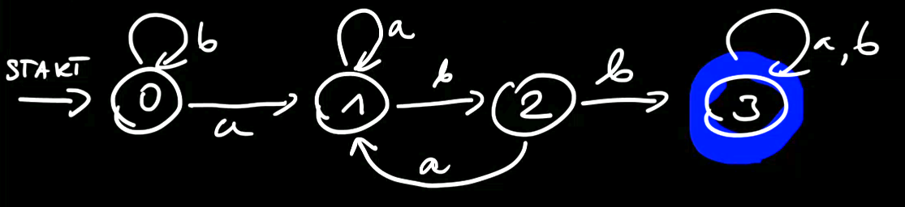
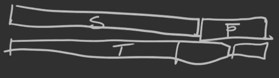

jeżeli chcemy policzyć, ile jest ciągów, w których mamy dokładnie k-literowych podciągów naszych liter robimy: Wn(k,k)−Wn(k−1,k−1)
1.3. Przykład
Ile jest słów nad {a,b} długości n takich, że jest dokładnie k wystąpień litery (symbolu) «b»?
Standardowo, oczywiście (kn) jako, że wybieramy z n miejsc k miejsc, na których stawiamy litery (symbole) «b».
Ale popatrzmy na to zadanie w nieco inny sposób.
Mamy 0–∞a…ab10–∞a…ab20–∞a…ab3…bk0–∞a…a
Czyli mamy SEQ({a}){b}SEQ({a}){b}SEQ({a}){b}…{b}SEQ({a})
Ostatecznie mamy język określony przez klasę kombinatoryczną: L≅(SEQ({a}))k+1({b})k,L(z)=(1−z1)k+1⋅zk.
1.4. Przykład
Ile jest ciągów nad alfabetem {a,b} takich, że jest k liter «b» oraz odległość każdego «b» od swojego poprzednika to co najwyżej d?
Popatrzmy na przykład słowa należącego do takiego języka. Weźmy k=3,d=3: aaaaaaaaaaaaababaaabaaaaaaaa
Jesteśmy w stanie określić klasę kombinatoryczną: L≅SEQ({a}){b}SEQ≤d({a}){b}SEQ≤d({a})…{b}SEQ({a})
Wówczas OGF: L(z)=(1−z1)2⋅zk⋅(1+z+z2+⋯+zd)k−1==(1−z1)2⋅zk⋅(1−z1−zd−1)k−1==(1−z)k−1zk(1−zd−1)k−1
Podzielmy na części OGF: A1(z)=(1−z)k+1zk=n≥0∑an(1)znA2(z)=(1−zd+1)k−1=n≥0∑an(2)zn
Czyli L(z)=A1(z)A2(z), wówczas: ln=k=0∑nak(1)⋅an−k(2)
2. Wzorce ukryte
Mamy pewny ciąg liter, który ma w sobie ukryte dane słowo.
Np. mamy tekst:
Komu bije dzwon Atego raczej nie wiem. Być może każdemu.
I ukryte słowo «kombinatoryka».
2.1. Przykład
Ile jest słów nad alfabetem A (mamy m symboli), które zawierają ukryty wzorzec ze słowem «kombinatoryka»?
2.1.1. Złe rozwiązanie
B≅SEQ(A){k}SEQ(A){o}…SEQ(A)
Wówczas OGF: B(z)=(1−mz)14z13.
2.1.2. Dobre rozwiązanie
Naszą klasę trzeba nieco zmodyfikować: SEQ(A∖{k}){k}SEQ(A∖{o}){o}…SEQ(A∖{a}){a}SEQ(A)
Czyli OGF wynosi: B(z)=(1−(m−1)z)13z13⋅1−mz1
3. Automaty skończone
3.1. Przykład
Czy słowo zawiera ciąg abb? (A={a,b})

Li — klasa słów akceptowanych przez powyższy automat jeśli zaczynamy ze stanu i.
L3=E+aL3+bL3
L2=bL3+aL1
L1=aL1+bL2
L0=aL1+bL0
Czyli:
L0(z)=zL1(z)=zL0(z)
L1(z)=zL1(z)+zL2(z)
L2(z)=zL1(z)+zL3(z)
L3(z)=zL3(z)+zL3(z)+1
a po rozwiązaniu układu równań: L0(z)=(1−z)(1−2z)(1−z−z2)z3=Apart=1−2z1−1−z−z22+z+1−z1
Liczymy współczynnik: [zn]L0(z)=2n−Fn+3+1
4. Wzorce blokowe
Tym razem, w odróżnieniu od wzorców ukrytych, musimy mieć w tekście dany blok liter koło siebie, w odpowiedniej kolejności.
Np. Dobry pterodaktyl jest! ma w sobie wzorzec blokowy «daktyl».
4.1. Zgodność prefiksowo-sufiksowa
Określamy ciąg c=(c0,c1,…,ck−1) oraz liczby ci=[[p1p2…pk−i=pi+1…pk]] gdzie [[⋅]] jest notacją Iversona. Czyli porównujemy końcówki z początkami danego słowa. Ciąg c nazywamy *ciągiem charakterystycznym dla słowa p.
Np. weźmy aabbaa — jego ciągiem charakterystycznym jest c=(c0,c1,…,ck−1)=(1,0,0,0,1,1) bo tylko dwie literki aa na początku i na końcu czynią zadość równości.
Określamy również wielomian charakterystyczny: C(z)=j=0∑k−1cjzj i znowu dla aabbaa będzie to po prostu C(z)=1+z4+z5.
4.2. Ciągi długości n z wzorcem p
Ile jest ciągów długości n nad alfabetem A, które zawierają wzorzec blokowy p?
Mamy:
alfabet A o m literach
wzorzec p=p1p2…pk
Szukamy języka (klasy) słów zawierających blok p.
Weźmy
S — słowa bez bloku p
T — słowa, które mają na końcu p, ale nie mają innego wystąpienia p
Wówczas S+T≅{ϵ}+S×A ponieważ możemy wziąć takie słowo, które nie ma na pewno na końcu p albo wziąć takie, któremu brakuje jednej literki i tutaj wystarczy dokleić jedną literkę z alfabetu A.
Dodatkowo S∗p≅T∗∀ici=0∑{pk−i+1,…,pk} (∗ to konkatenacja)
a to dlatego, że w T będzie końcówka, która będzie się zgadzać z początkiem tego wzorca:

Z powyższych własności mamy: S(z)+T(z)=1+S(z)⋅mz oraz S(z)⋅zk=T(z)⋅C(z) co daje nam S(z)=zk+(1−mz)⋅C(z)C(z)